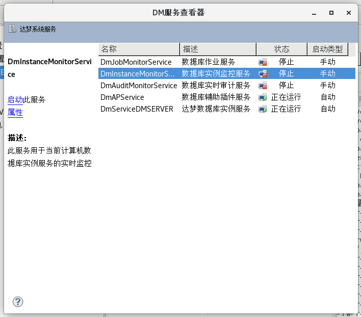
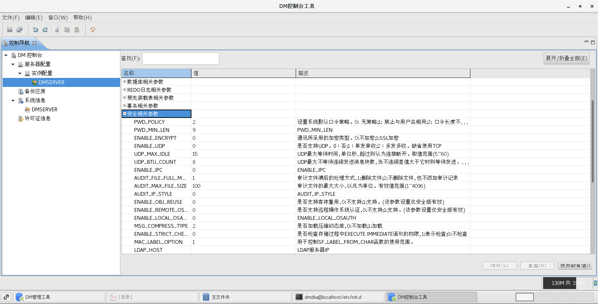
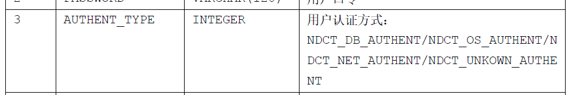
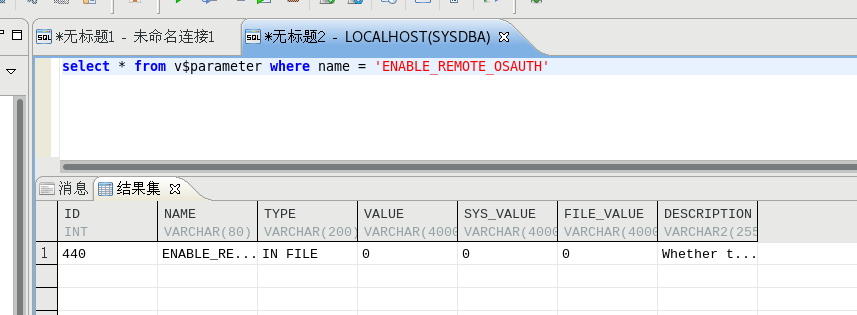
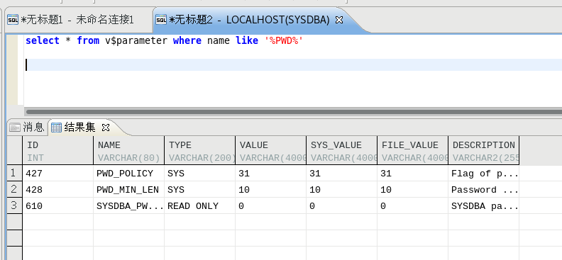
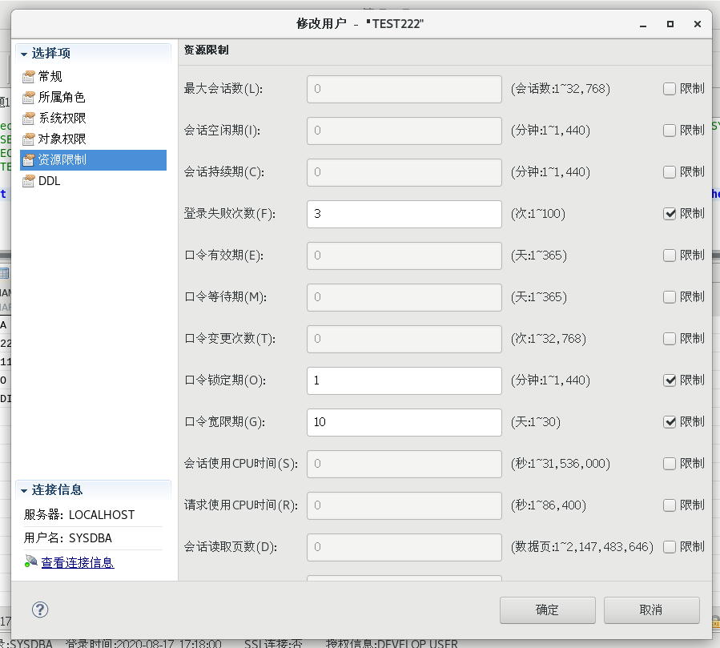
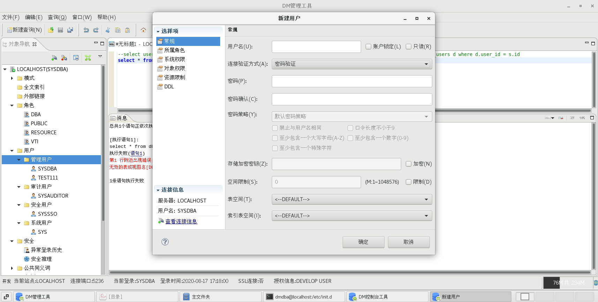
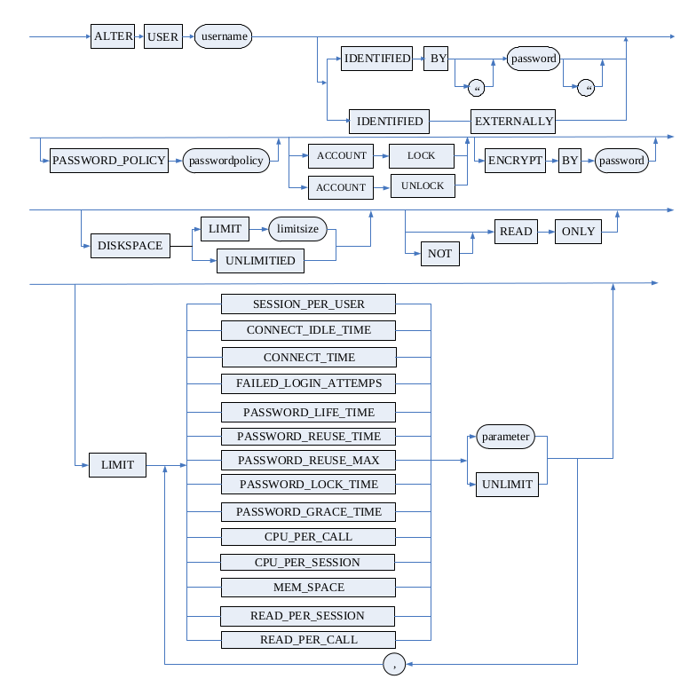
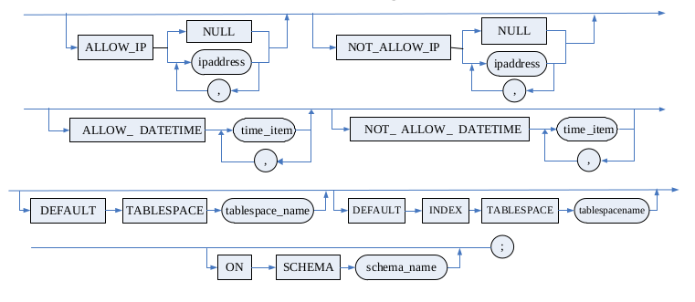
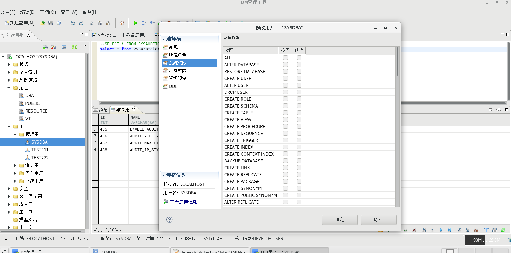

达梦 ¶
软件信息 ¶
-
发行商
DM安装时，默认安装所有系统相关组件，包括数据库作业服务、数据库监控服务、数据库审计服务、数据库插件服务和数据库实例。GUI下，通过“DM服务查看器”可管理数据库启用的服务，Windows操作系统的话则直接去服务里面看。
配置 ¶
配置文件 ¶
所有系统配置存放在
dm.ini
中，可直接通过vim等编辑器打开，默认位置在：
/opt/dmdbms/data/DAMENG
。
dm.ini
中有一项配置
CONFIG_PATH
，可决定数据库启动时读取配置的位置。
可通过“DM控制台工具”可视化读取配置文件，并可直接查看各配置的描述。可以通过该工具 修改配置文件 （不是修改系统运行参数），修改的参数在数据库重启后生效。
重要
当
dm.ini
中的某参数值设置为非法值时（比如设置密码长度参数非法时），系统的自动纠正策略如下：
-
若设置值与参数类型不兼容，则参数实际取值为默认值；
-
若设置值小于参数取值范围的最小值，则实际取值为最小值；
-
若设置值大于参数取值范围的最大值，则实际取值为最大值。
配置读写相关系统函数 ¶
读取函数共三个，函数名输入时无视大小写，分别用于读取整形、浮点型和字符型的参数值，读之前查查《DM系统管理员手册》。
SF_GET_PARA_VALUE((int)scope, (varchar)ini_para_name)
# 读取整形参数
# scope=1 -> 从dm.ini中读取配置值
# scope=2 -> 读取运行状态
# ini_para_name -> 参数名
SF_GET_PARA_DOUBLE_VALUE((int)scope, (varchar)ini_para_name)
# 读取浮点参数
SF_GET_PARA_STRING_VALUE((int)scope, (varchar)ini_para_name)
# 读取字符参数
相应的，修改函数如下：
SP_SET_PARA_VALUE((int)scope, (varchar)ini_para_name, (varchar)value)
# 修改整形参数
# scope=1 -> 同时修改dm.ini中的配置值及运行状态
# scope=2 -> 仅修改dm.ini中的配置值
# ini_para_name -> 参数名
SP_SET_PARA_DOUBLE_VALUE((int)scope, (varchar)ini_para_name, (varchar)value)
# 修改浮点参数
SP_SET_PARA_STRING_VALUE((int)scope, (varchar)ini_para_name, (varchar)value)
# 修改字符参数
身份鉴别 ¶
sysusers
表为达梦数据库最重要的核查对象，记录每个帐户的密码复杂度、登录失败、加密密钥、口令、密码更换周期等。
认证方式 ¶
对应
sysusers
的
authent_type
列。
没法测试，DM开发版不支持配这个（只能选密码验证），但看《DM系统管理员手册》可以发现，就是Oracle的几种认证方式。
 安全机制 ¶
密码复杂度策略 ¶

全局参数对应
dm.ini
中的
PWD_POLICY
，取值为0-31（采用5位二进制数表示flag），其中各位flag的意义如下：
-
0： 无策略；
-
1： 禁止与用户名相同；
-
2： 口令长度不小于9；
-
4： 至少包含一个大写字母（A-Z）；
-
8 ：至少包含一个数字（0－9）；
-
16：至少包含一个标点符号（不得输入半角引号和空格）
若为其他数字，则表示配置值的和，如3表示同时启用第1项和第2项策略。
dm.ini
提供了单独控制口令复杂度的参数
PWD_MIN_LEN
，其有效值为9-32，但仅当PWD_POLICY中的第二位未设置时才生效。
重要
新建用户时遵循系统的口令复杂度参数，但修改用户口令时，实际校验的是
sysusers
表中该用户的
pwd_policy
参数，因此要注意核查每个用户的对应参数。
登录失败和连接超时 ¶
安全机制对应
sysusers
中的
FAILED_NUM
、
LOCK_TIME
、
CONN_IDLE_TIME
（
FAILED_ATTEMPS
可能指之前发生的失败次数统计）。
可以直接GUI右键用户修改。
登录地址限制 ¶
安全机制对应
sysuser
表中的
allow_addr
和
not_allow_addr
列：
操作手册 ¶
核查：口令复杂度和周期 ¶
-- 一句话查询口令复杂度和周期
SELECT USERNAME, s.PASSWORD, AUTHENT_TYPE, PWD_POLICY, LIFE_TIME, REUSE_TIME, REUSE_MAX, GRACE_TIME
FROM SYS.SYSUSERS s, DBA_USERS d
WHERE ACCOUNT_STATUS = 'OPEN' AND s.ID = d.USER_ID;
核查：登录失败锁定和会话超时 ¶
-- 一句话查询登录失败锁定和超时
SELECT USERNAME, FAILED_NUM, LOCK_TIME, CONN_IDLE_TIME
FROM SYS.SYSUSERS s, DBA_USERS d
WHERE ACCOUNT_STATUS = 'OPEN' AND s.ID = d.USER_ID;
核查：登录地址限制 ¶
-- 一句话查询登录地址限制
SELECT USERNAME, ALLOW_ADDR, NOT_ALLOW_ADDR FROM SYS.SYSUSERS
WHERE ACCOUNT_STATUS = 'OPEN' AND s.ID = d.USER_ID;
操作：GUI界面 ¶
“DM管理工具”的用户模块可以可视化管理用户

新建用户时，可以配置图中的各项参数，就是对应了
sysusers
表中的各个列。特别地，如果口令不满足系统的复杂度要求，系统则会报错。
操作：SQL配置 ¶
《DM_SQL语言使用手册》第70页中有详细的语法树，遵循了标准的SQL语法。
 访问控制 ¶
预置角色 ¶
DM8出厂时，预置几个用户，并预先分配了角色：
-
超级管理员用户：SYSDBA
-
审计管理员用户：SYSAUDITOR
-
安全管理员用户：SYSSSO
-
系统管理员用户：SYS
默认情况下，只有对应角色的管理用户才能创建其他用户，如审计角色的管理员可创建新的审计帐户。
权限分配 ¶
具备相应权限的用户，可以修改同角色用户的系统权限及对象权限。
安全审计 ¶
注意dm参数中的
ENABLE_AUDIT
，该开关只有审计角色用户可操作。开启后日志记录符合要求。
日志信息存放在
SYSAUDITOR.SYSAUDIT
中，只有审计角色用户可查看。
安全通信 ¶
关注dm参数中的
ENABLE_ENCRYPT
。目前暂未找到其技术文档。